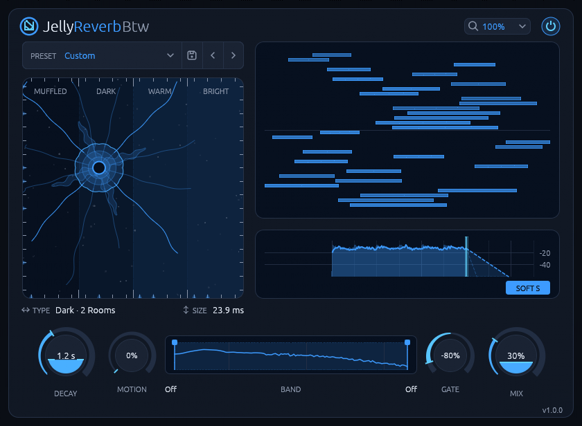

JellyReverbBtw holds 256 rooms on one jellyfish pad. Across, the walls go from muffled to dark, warm and bright, and in each of those four zones the room takes four shapes: Smooth, Echo, 2 Rooms and 4 Rooms. Up, the same room gets larger. Drag the jellyfish and you walk from room to room: the new room fills while the ones you left ring out, with no gap and no click. BAND keeps the reverb to part of the spectrum, so a kick's low end stays dry; DUCK pushes the room down while the input plays, and turned the other way it is a GATE, for gated drums. SOFT S keeps a singer's s's from splashing in the room, and MOTION keeps a long tail from ringing metallic. It has no latency. It is not a convolution reverb and not a delay: every room is an algorithmic one, and you choose it by place, not by numbers.
Read the manual for every control and how to use it.
Screenshots



What it's for
Features
- 256 rooms on one pad: 16 TYPEs across, in four zones of walls from muffled to bright, and 16 SIZEs up, from 6 to 60 ms. At DECAY 2.5 s every room's reverb time lands within 1.17 % of DECAY on average.
- A room switch that follows the jellyfish: up to eight rooms ring at once, so the rooms you left ring out under the new one. Dragged across the pad, the level stays within 1.5 dB and nothing clicks.
- BAND: outside it the input passes untouched at any MIX, so the low end or the top can stay dry.
- DECAY from 0.2 to 20 s, or typed as
1 bar,2 beatsor1/4at the song's tempo. - DUCK and GATE: right of its middle DUCK pushes the room down while the input plays; left of it, the room shuts 150 ms after the input stops, for gated drums.
- SOFT S: de-esses the room's input and leaves the dry alone: on s's between vowels the room's 4 to 10 kHz came down 3.6 dB.
- MOTION: a quarter of the room's lines wander a little, so a long tail rings less metallic.
- A window that shows the room: its 32 lines, the tail over the last seconds and where it is going, on the song's beats and bars, and the reverb's spectrum in the band.
- No latency.
- Light: 0.38 % of a CPU core at the defaults, stereo at 48 kHz, about 3.4 % while the jellyfish is flung across the pad at DECAY 20 s, and next to nothing on silence.
- Stereo, and mono in to stereo out.
- Presets: six built-in rooms beside Init, and your own.
- Zoom from 100 to 200 %.
- No network access and no telemetry.
Install
Download the latest version from the Releases page, or with these commands:
curl -LO https://github.com/jelly-comet/JellyReverbBtw-release/releases/download/v1.0.0/JellyReverbBtw-1.0.0-linux-x86_64.tar.gz
curl -LO https://github.com/jelly-comet/JellyReverbBtw-release/releases/download/v1.0.0/JellyReverbBtw-1.0.0-linux-x86_64.tar.gz.sha256
sha256sum -c JellyReverbBtw-1.0.0-linux-x86_64.tar.gz.sha256 && tar xzf JellyReverbBtw-1.0.0-linux-x86_64.tar.gz
cd JellyReverbBtw-1.0.0-linux-x86_64
Install for your user:
mkdir -p ~/.clap
rm -f ~/.clap/JellyReverbBtw.clap && cp JellyReverbBtw.clap ~/.clap/
Or for all users:
sudo mkdir -p /usr/lib/clap
sudo rm -f /usr/lib/clap/JellyReverbBtw.clap && sudo cp JellyReverbBtw.clap /usr/lib/clap/
Removing the old copy first avoids overwriting a file a running host has loaded. Then rescan plugins in your DAW.
To uninstall:
rm -f ~/.clap/JellyReverbBtw.clap
Your presets stay in ~/.local/share/JellyReverbBtw/presets/; delete that folder too if you want them gone.
FAQ
Is it free?
Yes. The download is free and MIT-licensed.
Is there a VST3 or LV2 version?
No. Releases contain the CLAP plugin only.
Does it run on ARM, like a Raspberry Pi or Apple Silicon?
No. It needs Linux on x86-64, on a CPU with AVX2.
Which hosts does it work in?
Any CLAP host. It was tried in REAPER.
Does it work on Wayland?
Through XWayland. The editor also needs a Vulkan driver.
Can I load impulse responses into it?
No. It is an algorithmic reverb, not a convolution one: its 256 rooms are built in, and you pick one with the jellyfish.
What's new in v1.0.0
20 Nov 2026 · Release on GitHub
JellyReverbBtw 1.0: a reverb whose room you pick with a jellyfish, 256 rooms on one pad, four kinds of walls and four shapes across, sixteen sizes up.
- The pad: TYPE across, from muffled to dark, warm and bright walls, each as Smooth, Echo, 2 Rooms or 4 Rooms; SIZE up, the same room from 6 to 60 ms.
- Walk from room to room: up to eight rooms ring at once, so the ones you left ring out under the new one, with no gap and no click.
- DECAY from 0.2 to 20 s, or typed as
1 bar,2 beatsor1/4at the song's tempo. MOTION against a long tail's metallic ring. - BAND: outside it the input passes untouched, so the low end can stay dry.
- DUCK pushes the room down while the input plays; turned left it is a GATE, for gated drums.
- SOFT S de-esses the room's input and leaves the dry alone.
- The window: the room's 32 lines, the tail and where it is going on the song's beats, the reverb's spectrum in the band, and every preset as notches on the pad.
- Presets: six built-in rooms beside Init, and your own.
- No latency. 0.38 % of a CPU core at the defaults, stereo at 48 kHz. Needs a CPU with AVX2.
License
MIT, see LICENSE. The licenses of the third-party code in the binaries are in
THIRD-PARTY-LICENSES.txt in each release archive.
VST is a registered trademark of Steinberg Media Technologies GmbH. CLAP is an open standard by the free-audio project. JellyReverbBtw is an independent project, not affiliated with or endorsed by the makers of any other reverb.